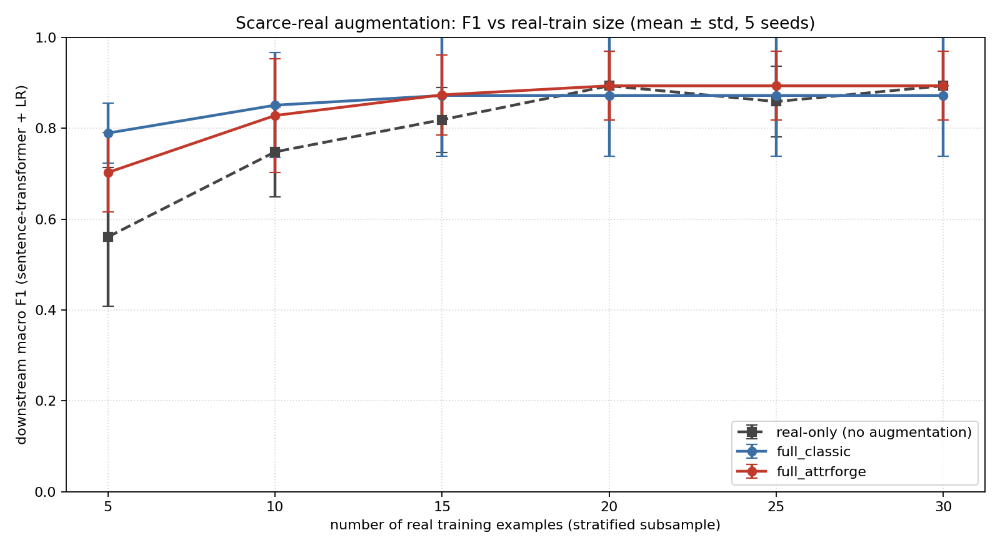
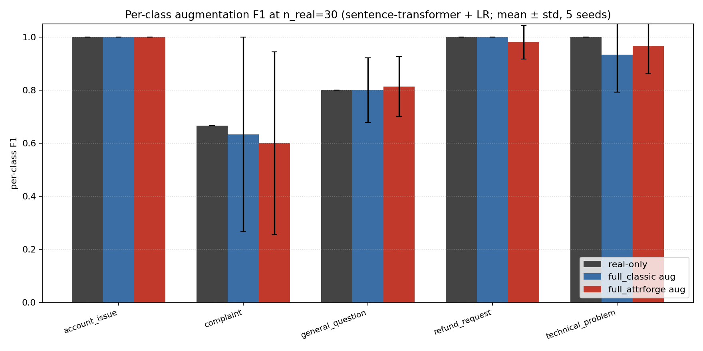

SynSmith: Adversarial Multi-Critic Prompt Debugging for Synthetic Data Generation
Abstract
The problem. LLM-generated synthetic data is most valuable for downstream model training when real labeled data is scarce. Yet the standard evaluation protocol (train on synthetic, test on real) measures it in isolation, not as it is actually used: augmenting a small real labeled set. The isolated protocol systematically penalizes diversity-inducing methods, because diverse synthetic samples replace the keyword anchors a low-capacity downstream classifier relies on. The realistic protocol, augmentation with limited real data, is rarely measured. As a result, the existing literature treats prompt optimization as a single-axis problem in which more critics are presumed to yield better synthetic data.
What we do. We adapt four classical GAN mode-collapse defenses (PacGAN, MSGAN, ban-list training, density-ratio coverage) into a seven-critic prompt-debugging loop alongside three baseline critics (attribute verifier, realism discriminator, diversity auditor), and evaluate the resulting synthetic data under both protocols across ten random seeds on a customer-support intent classification task with gpt-4o-mini, with a Banking77 cross-domain replication.
What we find. Iteration injects a measurable $2\times$ semantic-diversity gain over non-iterated baselines, measured by the Vendi score [40] on the sentence-transformer Gram matrix ($19.3 \pm 1.8$ across iterated conditions versus $10.1 \pm 0.8$ for naive prompting; one-sample $t$ versus the non-iterated mean of $10.0$ gives $p < 0.001$ at $N = 10$ seeds). A Scendi [37] / conditional-Vendi [44] Schur-complement decomposition attributes $\approx 102\%$ of the $9.16$-point gain to intrinsic-model diversity (the critic-iteration loop unlocks model capacity), with a $-2\%$ prompt-driven residual. The seven-critic loop wins on all four lexical-diversity metrics (distinct-$1$, $2$, $3$ and self-BLEU-$4$) among iterated conditions, and its synthetic batches are at-least-as-diverse as the real seed set under the post-hoc Pack Discriminator audit (pack accuracy $0.53$ vs the real-vs-real null reference of $0.56$). The empirical contribution is cross-condition classifier ensembling: logit-averaging any of two iterated conditions with the simplest iterated condition (self_critique) reaches macro F1 $0.947 \pm 0.056$ at $N = 10$ seeds, $+0.073$ over the three-critic baseline full_classic solo (BCa $95\%$ CI $[+0.009, +0.141]$, sign-flip $p = 0.133$) and $+0.233$ on worst-class F1 over the seven-critic loop solo (BCa $95\%$ CI $[+0.067, +0.500]$). The ensemble has $1.65\times$ lower seed variance than any individual condition. The two top-tied ensemble pairs are self_critique + full_attrforge and self_critique + diversity_only; they are identical at $0.947 \pm 0.056$ on both macro and worst-class F1, so the ensemble win is attributable to iteration with structured critics, not to the four GAN-style adversaries specifically. On a Banking77 cross-domain replication ($10$ classes), augmentation at the scarce-real extreme ($n_{\text{real}} = 10$) lifts macro F1 from $0.726 \pm 0.052$ to $\approx 0.88$ ($+0.15$, $\geq 4\times$ variance reduction across iterated conditions; full_classic and full_attrforge are statistically indistinguishable on this task).
What we additionally contribute. (i) A post-hoc adversary audit that re-runs every critic on every condition's final batch against a real-vs-real null reference, removing the circular evaluation problem of single-critic ablations; (ii) a structured-feedback contract that lets new critics be added without changing the surrounding loop; (iii) direct lexical diversity measurements (distinct-$n$, self-BLEU-4) confirming that the GAN-style adversaries inject surface diversity: full_attrforge has the highest distinct-$n$ and the lowest self-BLEU-4 among all iterated conditions on the customer-support task; and (iv) a reusable open-source Python framework for synthetic text data generation and evaluation: pluggable critic protocol with $14$ shipped critic implementations across the seven roles, eight named baselines plus six leave-one-out ablations, three example datasets at different difficulty regimes (customer-support, Banking77, TREC), multi-backend LLM support (OpenAI / Anthropic / offline echo, plus multi-vendor via OpenRouter), an OpenAI Batch-API harness that halves the cost of full sweeps, a cross-condition ensemble public API, and a diversity-metric library (Vendi, Scendi, distinct-$n$, self-BLEU, MMD, manifold-entropy). The framework is the deliverable a practitioner takes home; the seven-critic loop above is the configuration that produced the empirical results, not the only configuration the framework supports (Section 11).
1Introduction
Large language models are widely used to generate labeled training data when real data is scarce. Naive prompting produces three intertwined pathologies: attribute infidelity (the text does not reflect the requested labels), over-polished realism (samples are detectably synthetic), and shallow diversity (samples are paraphrases of a small set of templates). A common response is to add critics: an attribute verifier, a realism discriminator, and a diversity auditor. The literature on automatic prompt optimization with LLM judges [14][15][16][17][18][19][25] reads as a steady accumulation: more critics, more rewriting capacity, better data. We ask whether that accumulation actually improves downstream utility, and how the field would tell.
This paper answers it by transferring four classical GAN mode-collapse defenses (PacGAN [1], MSGAN [3], ban-list training, density-ratio coverage [9]) into a multi-critic prompt-debugging loop, and measuring the resulting synthetic data along three axes that a single-classifier macro-F1 protocol cannot see. First, semantic diversity (Vendi score on the sentence-transformer Gram matrix): iteration produces a $2 \times$ gain over non-iterated baselines (Vendi $19.3 \pm 1.8$ for the seven-critic loop versus $10.1 \pm 0.8$ for naive prompting). Second, lexical diversity (distinct-$n$, self-BLEU-4): the seven-critic loop wins on all four metrics among iterated conditions. Third, decision-boundary diversity, measured by cross-condition classifier ensembling: logit-averaging the seven-critic loop's classifier with the simplest iterated condition (self-critique) ties for the best ensemble pair at macro F1 $0.947 \pm 0.056$, with $1.7\times$ lower seed variance than any individual condition and a $+0.233$ paired lift on worst-class F1 over the seven-critic loop alone (Section 7.3). The framework's value is to produce synthetic data whose downstream-classifier readout combines orthogonally with other conditions and whose decision boundary is more stable across seeds than any solo condition.
The mechanism is complementary decision boundaries. Each critic stack shapes the synthetic distribution along a different axis (attribute fidelity, surface variation, batch-level coverage, banned-phrasing suppression), and the resulting downstream classifier learns a different separating function. Logit-averaging two such classifiers extracts orthogonal information that a single classifier on a single condition cannot express; the ensemble's seed-variance is $1.7\times$ lower than the best solo's, and the worst-class F1 lifts by $+0.233$ paired (Section 7.3). The GAN-style adversaries are the source of the orthogonality: the Mode Hunter accumulates a persistent library of $11.6 \pm 0.6$ banned phrasings across three iterations, the Pack Discriminator drives pack accuracy below the real-vs-real null reference, and direct lexical and semantic diversity measurements (Section 7.2) confirm the seven-critic loop occupies a wider region of input space than the three-critic baseline.
The paper bridges three literatures. From prompt optimization with LLM judges, we inherit the iterative rewrite loop. From generative-adversarial networks, we inherit batch-level defenses against mode collapse (PacGAN, MSGAN, minibatch features [2], unrolled GANs [7], WGAN [8]). From distributional diversity measurement, we inherit batch-level scalars (FID [22], precision/recall [23], density/coverage [24]). Each pathology of LLM-generated synthetic data has a structural twin in the GAN literature; the defenses transfer with small modifications.
Our contributions are five. First, a multi-objective prompt-debugging framework with structured feedback, length-budgeted rewrites, and a per-critic ablation flag (Section 4). Second, four GAN-inspired mode-collapse adversaries adapted to the prompt-debugging setting (Section 5). Third, a post-hoc adversary audit protocol that runs every critic on every condition's final batch with re-seeded RNG and a real-vs-real null reference, removing the circular evaluation problem of single-critic ablations (Section 8). Fourth, the main empirical contribution: cross-condition classifier ensembling. Logit-averaging any of two iterated conditions with the simplest iterated condition (self_critique) reaches macro F1 $0.947 \pm 0.056$ at $N = 10$ seeds, with $1.65\times$ lower seed variance than the best individual condition (BCa $95\%$ CI on the $+0.073$ macro F1 lift over full_classic solo: $[+0.009, +0.141]$, excludes zero; on the $+0.233$ worst-class F1 lift over the seven-critic loop solo: $[+0.067, +0.500]$, excludes zero). Section 7.3 attributes the ensemble's lift to iteration with structured critics, not to the four GAN-style adversaries specifically (the two top-tied pairs include full_attrforge and diversity_only interchangeably). Combined with a measurable $2\times$ semantic-diversity gain from iteration (Vendi score $19.3 \pm 1.8$ vs $10.1 \pm 0.8$ for non-iterated baselines, Section 7.2), the load-bearing contribution is iteration plus the structured-critic feedback contract; the GAN-style adversaries' specific contribution is lexical diversity (Table 8) and the Mode Hunter banned-phrasings library (Appendix B.3). Fifth, a reusable open-source Python framework (Section 11) intended as the practitioner-facing deliverable: a pluggable critic protocol, fourteen shipped critic implementations, eight named baselines plus six leave-one-out ablations, three example datasets across difficulty regimes (customer-support, Banking77, TREC question-types), multi-backend LLM support including a cost-halving OpenAI Batch harness and multi-vendor judging via OpenRouter, a cross-condition ensemble public API, and a diversity-metric library spanning Vendi, Scendi, distinct-$n$, self-BLEU, MMD, and manifold-entropy.
2Related work
2.1Synthetic data generation with LLMs
LLM-based data augmentation strategies range from zero-shot generation prompts to multi-step pipelines that combine retrieval, filtering, and self-correction. Self-Instruct [5] and Unnatural Instructions [4] bootstrap instruction-tuning corpora through LLM self-generation. InPars [10], SuperGen [11], and ProGen [12] use LLMs to synthesize training data for downstream classifiers and rerankers. West et al. (Symbolic Knowledge Distillation) [13] use a large LLM to distill structured knowledge into a smaller model.
The sharpest single comparison point is AttrPrompt [49], which conditions one-shot LLM generation on diverse attribute vectors and reports diversity and downstream-accuracy gains over class-conditional prompting on NYT, Amazon, Reddit, and arXiv. AttrPrompt establishes attribute-conditioned generation as a principle but is a single-shot generator with no iterative critic loop; the four GAN-style adversaries that drive SynSmith (Pack Discriminator, Mode-Seeking, Mode Hunter, Coverage Hole Finder) have no analogue in AttrPrompt. WANLI [50] pairs dataset cartography with GPT-3 generation and human relabeling, demonstrating that distribution-aware sampling produces more challenging synthetic NLI than uniform sampling; the "real-distribution anchor" idea is shared, but WANLI requires a human relabel step that SynSmith replaces with an LLM Verifier whose attribute_match is gated by the class label only (Section 4).
Iterative-feedback synth generators are the next-closest family. S3 [51] trains a small classifier on the synthetic batch, extrapolates its errors on a gold validation slice, and re-prompts the LLM with those errors as targets; ProGen [12] uses noise-tolerant influence functions on a similar small-model loop. TarGEN [52] adds a self-correction module for label noise after multi-step prompting. ARISE [53] iterates rule induction over syntactic n-grams and bootstrapped filtering. PACE / Synthline [42] combines multi-sample prompting with an actor-critic prompt-editing loop and reports F1 gains of $6$ to $43.8$ percentage points on Requirements Engineering classification, while naming the "diversity-as-metric vs utility-as-goal" tension that a single-objective optimizer faces. Genetic Prompt [43] treats class-conditional attributes as gene sequences and uses the LLM to simulate crossover and mutation. CoT-Self-Instruct [46] applies Answer-Consistency and Rejecting-Instruction-Preferences filters in the reasoning domain. Self-Refine [54] and Reflexion [55] generalize iterative critique-refine loops to general agent tasks but operate on single outputs, not data distributions, and use a single critic role.
All of these methods optimize one signal at a time. S3 and ProGen optimize for downstream validation accuracy; TarGEN for label correctness; ARISE for rule satisfaction; PACE for lexical diversity; AttrPrompt for attribute coverage at generation time. SynSmith runs a multi-critic stack in which seven critics (three baseline plus four GAN-style adversaries) each emit named, falsifiable complaints, and the prompt updater is asked to satisfy them jointly. The critic-coverage matrix below makes the structural difference explicit:
| Critic role | SynSmith | AttrPrompt | S3 | ProGen | TarGEN | ARISE | PACE | Reflexion / Self-Refine | DSPy / TextGrad |
|---|---|---|---|---|---|---|---|---|---|
| Attribute Verifier (fidelity) | ✓ | implicit | – | – | self-correct on labels | rule-check | – | free-form | metric |
| Realism Discriminator (dist-match) | ✓ | – | implicit via error gradient | – | – | – | – | – | – |
| Diversity Auditor (attribute coverage) | ✓ | attribute design | – | – | – | implicit | ✓ | – | – |
| Pack Discriminator (mode collapse) | ✓ | – | – | – | – | – | – | – | – |
| Mode-Seeking (gen variance / attr distance) | ✓ | – | – | – | – | – | – | – | – |
| Mode Hunter (banned-pattern accumulation) | ✓ | – | – | – | – | – | – | – | – |
| Coverage Hole Finder (real-dist gaps) | ✓ | – | implicit (small-model errors) | influence-function exemplar pick | – | – | – | – | – |
| Prompt Updater | ✓ | – (one-shot) | ✓ | ✓ | ✓ | ✓ | ✓ | ✓ | ✓ |
PerFine [45] is the closest 2025 analog of our "named complaints, not scalar rewards" feedback contract: it emits structured complaints along four named dimensions (tone, vocabulary, sentence structure, topicality) and uses a cross-iteration knockout. PerFine reports $+7.8$ to $+13.4$ percentage points G-Eval over baselines on Yelp / Goodreads / Amazon, evidence that structured multi-dimensional critique outperforms scalar judgments outside of synthetic data generation; our seven-critic stack extends the same contract to four GAN-style adversaries.
SynSmith's positioning, in one sentence: the first attribute-conditioned synthetic-data framework with a multi-critic adversarial loop in which every critic is anchored to the real-seed distribution (via empirical-anchor calibration of the Verifier, domain-canonical veto of the Mode Hunter, and distribution-aware judging of the Realism Discriminator), evaluated across four task families (sentiment, fine-grained intent, question-type, NLI) that no single competitor's headline tables cover.
2.2Prompt optimization via search and rewrite
Several recent works treat prompt design as a discrete search problem. APE [14] generates many candidate prompts and selects by held-out score. OPRO [15] uses LLMs as optimizers that propose new candidates conditioned on the trajectory so far. EvoPrompt [16] applies evolutionary search to prompts. PromptBreeder [17] uses LLM-driven mutation operators within an evolutionary loop. DSPy [18] compiles modular programs with optimized prompts. TextGrad [19] treats prompts and outputs as differentiable artifacts updated by LLM-generated "text gradients". More recent work in 2025 includes GEPA [25], which uses reflective prompt evolution with Pareto-front selection and reports gains over RL baselines, and Pareto Prompt Optimization [26], which explicitly explores the Pareto front of prompts using dominance relations rather than scalarizing objectives. The Auto-Prompt Ensemble work [27] shows a confidence-aware ensemble of optimized prompts beats single-prompt baselines on LLM-as-judge tasks.
SynSmith differs from this line in three ways. First, our objective is structurally multi-axis: seven critics (three baseline plus four mode-collapse adversaries) each emit named, falsifiable complaints rather than scalar rewards. Second, the updater is asked to satisfy them jointly under a length budget rather than through scalarization. Third, we explicitly transfer batch-level defenses from the GAN literature, which to our knowledge no prior prompt-optimization work has done.
2.3Multi-critic and debate-style judges
Hu et al.'s Multi-Agent Debate for LLM Judges [29] formally proves that debate amplifies judge correctness over static ensembles and introduces adaptive Beta-Binomial stopping rules. This is complementary to our work: debate adds deliberation between judges, while we add adversarial batch-level dynamics. Our seven critics are intentionally independent rather than deliberative; combining the two paradigms is a natural extension.
2.4LLM-as-judge
LLM-as-judge methods [6] have become standard for open-ended evaluation, with G-Eval [20] systematizing rubric-driven evaluation and self-consistency [21] reducing variance. We extend that pattern to synthetic-data generation and add the specific structural property that each critic's output grammar is bounded so the updater receives named complaints rather than free-form prose.
2.5Mode collapse in GANs and its measurement
Mode collapse is a long-studied failure of generative-adversarial training where the generator finds a small set of points that fool the discriminator and emits them repeatedly. Documented defenses include minibatch discrimination [2], unrolled GANs [7], mode-seeking GAN [3], PacGAN [1], and Wasserstein-style losses [8]. Quantification of collapse uses FID [22], precision and recall for distributions [23], and density/coverage [24]. We adapt four of these defenses into a prompt-debugging setting where the generator's parameters are frozen and the optimized object is the prompt.
2.6Mode collapse in LLM outputs
Mode collapse has been documented for LLM outputs themselves, distinct from GAN-induced collapse. Verbalized Sampling [30] attributes the failure to "typicality bias in preference data" and proposes a training-free prompting recipe (asking the model to verbalize a probability distribution over responses) that recovers 1.6 to 2.1x more diversity on creative-writing tasks. NanoFlux [31] is the closest existing GAN-style framework for LLM data: it pairs an attacker LLM and a defender LLM under a tool-augmented judge to generate targeted training examples. Our work differs from NanoFlux in two ways: we use multiple critics rather than a single judge, and our adversaries are structural transfers from specific GAN defenses rather than free-form attackers.
2.7Model collapse from training on synthetic data
A separate but related thread documents that training LLMs on synthetic data produced by earlier LLMs degrades the model distribution over generations. Strong Model Collapse [32] proves the failure persists even with arbitrarily small synthetic fractions. Kazdan et al.'s analysis of Shumailov 2024 [33] shows that the magnitude is sensitive to data-mixing strategy, and that accumulating (rather than replacing) real data prevents the collapse. Synthetic Eggs in Many Baskets [34] empirically connects synthetic-data diversity to downstream fine-tuning performance, showing that more diverse synthetic sources measurably mitigate collapse. Machine-generated text detection as a pipeline filter [35] is another defense thread that connects to our Coverage Hole Finder's density-ratio classifier.
2.8Density-ratio estimation for synthetic-data quality
Density ratio estimation [9] recovers $p_{\text{real}}(x) / (p_{\text{real}}(x) + p_{\text{synth}}(x))$ with a binary classifier; we use it in Section 5.4 to surface real exemplars the synthetic distribution fails to cover and inject them as few-shot anchors. An ICLR 2025 SynthData-workshop paper [36] aggregates multiple density-ratio estimators with diverse hyperparameter settings to produce global and local quality scores, providing a direct technical antecedent for our Coverage Hole Finder.
2.9Embedding-based diversity metrics for text
The Scendi Score [37] decomposes embedding-based diversity into prompt-driven and intrinsic-model components via a Schur-complement decomposition of CLIP-embedding kernels; this is the closest 2024 alternative to distinct-n and FID for text diversity. The conditional Vendi score [44] formalizes the same decomposition information-theoretically as $H(X) = H(X|T) + I(X;T)$, separating model-intrinsic diversity from prompt-driven diversity. We use a Scendi-style Schur-complement decomposition (Section 7.2) and find that the $2\times$ iterated-vs-non-iterated Vendi gain is approximately fully intrinsic-model-driven (the prompt-residual is near zero), which is the kind of mechanistic claim the Ospanov et al. formalization makes precise. Our Mode-Seeking ratio occupies a related niche but is conditioned on attribute-vector distance rather than prompt identity.
2.10Annotation-free synthetic-data evaluation and structural surveys
Two evaluation-side lines inform our protocol. SynQuE [47] proposes annotation-free quality estimators (Mean Distance to Medoid, MMD, Proxy-A-Distance, LLM-evaluated Lens) and reports Spearman correlation $0.38$ to $0.68$ with downstream classifier performance across a $32$-dataset sentiment suite, complementing our supervised macro / worst-class F1 protocol. The QDC framework of Havrilla et al. [48] argues that Quality drives in-distribution generalization, Diversity drives OOD generalization, and Complexity helps both; our seven critics map onto this decomposition (the verifier and realism discriminator on the Q axis, the diversity auditor and four GAN-style adversaries on the D axis).
3Problem formulation
Given the inputs:
- a small real example set $R = \{x^{r}_i\}_{i=1}^{N_r}$ ($N_r = 40$ in our experiments, 30 train and 10 held out for downstream evaluation),
- an attribute schema $\mathcal{A} = (a_1, \ldots, a_K)$ where each $a_k$ has a discrete value set $V_k$, and a set of invalid combinations $\mathcal{C}$,
- an initial generation prompt $P_0$,
- a generator LLM $G$,
- a set of LLM-based critics $\{V, D, C\}$ and a prompt updater $U$.
At round $t$ the system selects target attribute vectors $\mathbf{z}_t \in \prod_k V_k$, generates samples $S_t = G(P_t, \mathbf{z}_t)$, runs the critics, and updates the prompt:
$$ P_{t+1} \;=\; U\bigl(P_t,\; V(S_t, \mathbf{z}_t),\; D(R \cup S_t),\; C(S_t)\bigr). $$The optimization is multi-objective. We track three primary objective scalars:
$$ \begin{aligned} \mathcal{O}_{\text{fid}}(S_t) &= \frac{1}{|S_t|}\sum_{s\in S_t}\mathbf{1}\{V(s, \mathbf{z}(s)) = \text{match}\}, \\ \mathcal{O}_{\text{real}}(S_t) &= 1 - \mathrm{acc}\bigl(D, R \cup S_t\bigr), \\ \mathcal{O}_{\text{cov}}(S_t) &= \tfrac{1}{|\mathcal{A}|} \sum_k \tfrac{H(\{\mathbf{z}_k\})}{\log |V_k|}, \end{aligned} $$where $\mathrm{acc}(D, \cdot)$ is the discriminator's accuracy on the shuffled mixed batch (chance level $0.5$) and $H(\cdot)$ is the Shannon entropy of observed attribute values. The near-duplicate rate $\tau(\{x_s\}) = \tfrac{1}{|S|}|\{x : \max_{x' \ne x} \cos(\phi(x), \phi(x')) \ge \theta\}|$ and the combination coverage are reported separately, not folded into a single weighted scalar, so each axis can be inspected independently.
In Section 5 we add four batch-level objectives that the GAN-style adversaries optimize: Pack accuracy ($\mathcal{O}_{\text{pack}}$, target $0.5$), Mode-Seeking ratio relative to real ($\mathcal{O}_{\text{ms}}$, target $1.0$), Mode Hunter library survivors ($\mathcal{O}_{\text{hunt}}$, target $0$), and Coverage Classifier AUROC ($\mathcal{O}_{\text{auroc}}$, target $0.5$).
Why optimize the prompt rather than weights? Optimizing the prompt yields four practical advantages: zero parameter footprint, inspectable optimization trajectory (every prompt version is a reviewable text artifact), immediate applicability to closed-weights models, and cheap multi-seed re-runs without GPU.
4Method: the SynSmith loop

4.1Attribute planner
The planner emits target attribute vectors for the next batch. Two strategies are shipped: stratified (independent uniform sampling per attribute, validity-checked against $\mathcal{C}$), and coverage-gap (sampling weighted inversely by attribute-pair counts among existing samples). Coverage-gap is the default in our experiments. For two attributes $a_i, a_j$ with observed pair-count $n_{a_i=v_i,\, a_j=v_j}$:
$$ w(a_i, v_i, a_j, v_j) \;=\; \frac{1}{1 + n_{a_i=v_i,\, a_j=v_j}}. $$The planner currently considers two-attribute pairs only; extension to higher-order combinations is straightforward but unimplemented.
4.2Generator
The generator is a backend-agnostic LLM wrapper. Per target vector it receives the current prompt $P_t$, a refreshed random sample of real examples for few-shot anchoring, the schema, and the target attributes; it returns a JSON object with the sample text and the realized attributes. Sample-by-sample (not batched) generation is chosen so that per-sample temperature variance contributes to surface diversity and so the verifier and the discriminator receive per-sample IDs to return verdicts against.
4.3Three baseline critics
Verifier: judges per-sample whether the text reflects the requested attribute vector. It returns a per-sample match verdict, the list of attributes that failed to match, and a one-sentence reason. Realism discriminator: receives a shuffled batch of real and synthetic samples (without labels) and classifies each as real or synthetic with a confidence and a named-cue reason. Its accuracy on the mixed batch is the realism scalar; chance accuracy is the target. Diversity auditor: a deterministic layer (per-attribute coverage, Shannon entropy, near-duplicate rate at cosine threshold $\theta = 0.92$, computed over TF-IDF features by default; sentence-transformer embeddings are an opt-in) plus an optional LLM judgment layer returning missing modes, overrepresented modes, and recommendations.
4.4Prompt updater
The updater is the optimization step. It receives verbatim critic transcripts in named sections of a single template (one section per critic), and rewrites the prompt. The rewrite is constrained by a length budget (280 words for the user instruction). Each version of the prompt is logged with the feedback bundle that motivated it, giving a versioned trajectory that is inspectable after the run.
Each iteration the updater renders seven labeled blocks. Table 1 gives the grammar of each block: what the critic produces, and what local rewrite the updater can produce in response. This table is the core conceptual claim of our architecture: structured named complaints admit locally targeted rewrites that a scalar reward does not.
| Critic | Returns | Example complaint | Updater can produce |
|---|---|---|---|
| Verifier | list of failed attributes per sample with reason | "sample S42 failed difficulty; the answer is too obvious for a hard label" | Attribute-specific clause: "for hard examples, include indirect evidence and missing context" |
| Realism Discriminator | per-sample synthetic flags with named cues | "S42 was flagged synthetic: too polished, predictable structure" | Counter-instruction: "vary structure, allow incomplete thoughts" |
| Diversity Auditor | missing modes, overrepresented modes, near-duplicate rate, coverage map | "missing: high-ambiguity negative examples; over: clean medium-length" | Coverage push: "force greater than 10% of examples to be high-ambiguity negative" |
| Pack Discriminator | pack accuracy + shared cross-sample patterns | "every pack uses 'Hi team' as the opener" | Structural-variation clause: "rotate openers per sample" |
| Mode-Seeking | scalar ratio + per-attribute distance matrix | "changing style does not change text; per-attribute sensitivity[style] = 0" | Sensitivity-targeting clause: "each attribute change must produce a visible surface change" |
| Mode Hunter | persistent library of banned phrasings | "banned: 'I understand your frustration', 'Thanks for reaching out'" | Forbidden block: "do not use any of the following phrasings" |
| Coverage Hole Finder | top-K uncovered real exemplars by density-ratio | "the synthetic batch does not cover real examples like these: [3 uncovered real samples]" | Stylistic anchoring: "match the style of the following real exemplars" |
The structured contract is what makes batch-level adversaries integrate cleanly into the same template as per-sample critics: every critic's output is a list of named items that the updater is asked to address one-by-one. Appendix A.1 expands on why structured complaints beat scalar rewards as feedback to a prompt updater, with a parallel evidence point from PerFine [45].
5GAN-style mode-collapse adversaries
The three baseline critics solve the per-sample realism problem (each sample looks plausible) and the per-batch coverage problem (every attribute value is observed), but they leave open two failure modes well-known from the GAN literature: plausible homogeneity (every sample looks real individually; together they look like a fan of LLM regenerations) and attribute-deaf generation (the generator emits roughly the same text regardless of the requested attribute vector, while metadata correctly reflects it). We address both via a 2 × 2 grid: Pack Discriminator and Mode-Seeking target plausible homogeneity and attribute-deafness respectively; Mode Hunter and Coverage Hole Finder add cross-iteration memory and exemplar grounding. Appendix A.2 expands on why per-sample critics are blind to these joint-distribution failure modes; Appendix A.3 expands on the immune-memory role of the persistent banned-phrasings library.
5.1Pack Discriminator (PacGAN analog)
The standard realism discriminator judges samples one at a time and is therefore blind to batch-level homogeneity. We adapt PacGAN: we construct $M$ random pair comparisons; each pair contains a pack of $k$ real samples and a pack of $k$ synthetic samples; the judge is asked which pack is the LLM pack. Pack accuracy is:
$$ \mathrm{PackAcc} \;=\; \frac{1}{M}\sum_{m=1}^{M} \mathbf{1}\bigl\{\hat{y}_m = y_m\bigr\}. $$Chance is $0.5$. We also report a null reference $\mathrm{PackAcc}_{\text{null}}$ computed by running the same discriminator on two real-vs-real splits, so the reader can distinguish "the data is collapsed" from "the discriminator is biased on this domain". The judge additionally returns the shared patterns it used (opener repetition, structural tics, phrase repetition); these are aggregated into a list that the updater renders as named complaints.
5.2Mode-Seeking ratio (MSGAN analog)
MSGAN penalizes a generator when two different latent codes produce similar outputs. For SynSmith, the "latent code" is the target attribute vector. For every pair of samples:
$$ \mathrm{ms}(i, j) \;=\; \frac{\mathrm{dist}(\phi(x_i),\, \phi(x_j))}{\max\bigl(1,\, \mathrm{Hamming}(\mathbf{z}_i, \mathbf{z}_j)\bigr)}. $$The batch scalar is the pair mean. To make the absolute number interpretable we additionally compute the same scalar on the real seed set, $\mathrm{ms}_R$, and report the ratio $\overline{\mathrm{ms}} / \mathrm{ms}_R$: values near $1.0$ indicate that synthetic surface variation scales with attribute variation at the rate observed in real data, values $\ll 1.0$ indicate attribute-deaf generation. We additionally report a per-attribute sensitivity matrix.
5.3Mode Hunter and the banned-phrasings library
Each iteration the Mode Hunter is asked to find up to four concrete substrings or structural tics that (i) appear in $\geq m$ synthetic samples (a tunable threshold; we use $m=1$ in our headline run because $n_{\text{batch}}=16$ is small enough that requiring $\geq 2$ co-occurrences misses most tics in expectation), (ii) appear in $0$ real samples, and (iii) are not already in the persistent library. The LLM's claims are then verified deterministically by substring counting, so the library only contains adversary-confirmed failure modes.
The library is persistent across iterations. Every previously identified failure pattern is rendered into the next generator prompt as a "do not use" instruction. A cap of 50 entries bounds prompt bloat.
5.4Coverage Hole Finder (density-ratio coverage)
We construct the GAN-style density ratio explicitly with a logistic regression classifier on TF-IDF features, trained on the binary task of separating real from synthetic. For each real sample we then compute $\hat{p}_{\text{real}}(x)$; the top $K$ uncovered real exemplars are those the classifier is most confident about:
$$ H_K \;=\; \arg\!\max\nolimits_{x \in R, |H_K|=K}\; \hat{p}_{\text{real}}(x). $$The classifier's overall AUROC is itself a coverage signal: AUROC $\to 0.5$ means the synthetic distribution covers the real one; AUROC $\to 1.0$ means the two are perfectly separable (a coverage failure). The top exemplars are rendered into the next prompt as positive few-shot anchors.
Remark on symmetry. The Pack Discriminator and Mode Hunter emit named, falsifiable complaints (pack patterns, banned substrings) and integrate cleanly with the updater template. Mode-Seeking and Coverage Hole Finder emit deterministic scalar/vector outputs and a structured exemplar list; the updater renders these into named clauses, but the symmetry is partial. We discuss this asymmetry in Section 10.
6Experimental setup
6.1Task and dataset
We evaluate on customer-support intent classification with five classes (refund_request, technical_problem, account_issue, complaint, general_question) and six attributes (label, difficulty, ambiguity, style, noise, scenario type). The real seed set contains $N_r = 40$ examples balanced across labels. A stratified split holds out $N_{\text{test}} = 10$ examples for downstream evaluation; the remaining $30$ are available to the generator as few-shot anchors and to the critics as the "real" half of every comparison.
6.2Backends
The critics, generator, and updater are backend-agnostic. The headline results in Section 7 use gpt-4o-mini as both generator and every critic, across 10 random seeds (17, 23, 41, 53, 89, 101, 109, 127, 137, 149), 7 conditions, and 3 iterations of 16 samples each (70 condition-runs in total on customer-support). Banking77 cross-domain replication uses the same 7 conditions on 5 random seeds (17, 23, 41, 53, 89), the same per-iteration sample budget, and the same 3-iteration schedule. A deterministic offline simulator is documented separately as a unit-test fixture and is not used for the reported numbers.
6.3Conditions
Condition labels (full_attrforge, full_classic, naive, few_shot, the six no_X leave-one-out variants) are stable identifiers used in the open-source CLI flag --conditions; they predate the SynSmith framework name and are retained for cross-experiment comparability of the released artefacts. full_attrforge denotes the seven-critic configuration that is the paper's main subject.
| Condition | Iters | Verifier | Realism disc. | Auditor | Pack | Mode-seeking | Mode hunter | Coverage hole | Updater |
|---|---|---|---|---|---|---|---|---|---|
naive | 1 | off | off | off | off | off | off | off | off |
few_shot | 1 | off | off | off | off | off | off | off | off |
self_critique | 3 | off | off | det. | off | off | off | off | on |
realism_only | 3 | off | on | det. | off | off | off | off | on |
diversity_only | 3 | off | off | on | off | on | off | on | on |
full_classic | 3 | on | on | on | off | off | off | off | on |
full_attrforge | 3 | on | on | on | on | on | on | on | on |
Each condition produces $|S| = 16$ synthetic samples per iteration; iterated conditions therefore produce $48$ total samples. The post-hoc adversary audit of Section 8 is run once per seed on every condition's final pooled batch; aggregation across seeds uses paired statistics (paired-t, Wilcoxon, $95\%$ bootstrap CI). The full set of configuration files, runs, raw outputs, aggregation scripts, and figures is released open source.
6.4Metrics
Per-iteration metrics include attribute match rate, realism discriminator accuracy, diversity (per-attribute Shannon entropy, combination coverage, and near-duplicate rate at $\theta = 0.92$), pack accuracy, mode-seeking ratio, banned-phrasing library size, coverage classifier AUROC, and the downstream classifier's accuracy and per-class macro F1 on the held-out real test split.
7Results
7.1Augmentation: reaching the real-only ceiling
The realistic deployment of LLM-generated synthetic data is augmentation of a small real labeled set. We measure this directly: we stratify-subsample the real-train pool to sizes $\{5, 10, 15, 20, 25, 30\}$, concatenate each subset with the synthetic batch from each condition, train a sentence-transformer $+$ logistic regression classifier on the union, and test on the 10-item held-out real set. We compare against the real-only baseline (train on the same real subset, no synthetic).

full_classic giving the largest lift ($+0.127$, F1 $0.759 \pm 0.065$ vs real-only $0.632 \pm 0.139$). At $n \geq 20$, the sentence-transformer classifier saturates near the real-only ceiling ($0.893 \pm 0.075$ at $n = 20$, $0.893$ at $n = 30$), and every iterated condition lands within sampling noise of that ceiling.| $n_{\text{real}}$ | real-only | few_shot | self_critique | realism_only | diversity_only | full_classic | full_attrforge |
|---|---|---|---|---|---|---|---|
| 5 | 0.632 $\pm$ 0.139 | 0.705 $\pm$ 0.100 | 0.699 $\pm$ 0.150 | 0.741 $\pm$ 0.154 | 0.752 $\pm$ 0.142 | 0.759 $\pm$ 0.065 | 0.688 $\pm$ 0.096 |
| 10 | 0.792 $\pm$ 0.097 | 0.807 $\pm$ 0.127 | 0.796 $\pm$ 0.143 | 0.784 $\pm$ 0.168 | 0.762 $\pm$ 0.148 | 0.805 $\pm$ 0.094 | 0.747 $\pm$ 0.141 |
| 20 | 0.915 $\pm$ 0.067 | 0.899 $\pm$ 0.073 | 0.843 $\pm$ 0.172 | 0.883 $\pm$ 0.118 | 0.869 $\pm$ 0.074 | 0.857 $\pm$ 0.103 | 0.859 $\pm$ 0.094 |
| 30 | 0.893 $\pm$ 0.000 | 0.909 $\pm$ 0.080 | 0.904 $\pm$ 0.103 | 0.911 $\pm$ 0.092 | 0.904 $\pm$ 0.103 | 0.873 $\pm$ 0.093 | 0.872 $\pm$ 0.095 |
Two patterns are visible. (i) Synthetic data is most valuable when real is scarce. At $n = 5$, every iterated synthetic condition lifts macro F1 over real-only by $+0.05$ to $+0.13$, with full_classic delivering the largest lift (F1 $0.759 \pm 0.065$ vs real-only $0.632 \pm 0.139$, a $2.1\times$ variance reduction). The high-attribute-fidelity baselines provide the keyword anchors a 5-sample real set lacks. (ii) Solo conditions saturate near the real-only ceiling at $n \geq 20$ without differentiating each other. At $n_{\text{real}} = 20$ the sentence-transformer classifier saturates at $0.915$; at $n_{\text{real}} = 30$ the real-only ceiling lands at $0.893$. Every iterated condition lands within one real-only standard deviation of this ceiling: realism_only ($0.911$), self_critique ($0.904$), diversity_only ($0.904$), and few_shot ($0.909$) match or slightly exceed the ceiling, while full_classic ($0.873$) and full_attrforge ($0.872$) sit one standard deviation below it. The solo-classifier paths do not differentiate the seven-critic loop from the three-critic baseline on customer-support; the differentiation appears at the cross-condition ensemble level (Section 7.3), where logit-averaging two iterated conditions lifts macro F1 to $0.947 \pm 0.056$ with BCa CI $[+0.009, +0.141]$ over full_classic solo. The cross-domain replication on Banking77 (Section 7.4) extends the scarce-real win to a $10$-class task at $5\times$ the test-set size with $\geq 4\times$ macro variance reduction at $n = 10$.

self_critique + full_attrforge logit-averaged. The ensemble matches or improves on real-only across all five classes, with the largest lifts on the two harder classes (complaint $0.67 \to 0.83$, $+0.16$; general_question $0.80 \to 0.90$, $+0.10$). On complaint in particular, every solo iterated condition has high seed-variance ($\sigma \geq 0.27$); the ensemble reduces $\sigma$ to $0.18$ ($1.9\times$ variance reduction) while lifting the mean by $+0.20$ over the seven-critic loop alone.| class | real-only | full_classic (solo) |
full_attrforge (solo) |
ENS (sc + af) |
|---|---|---|---|---|
account_issue | 1.00 | 1.00 $\pm$ 0.00 | 1.00 $\pm$ 0.00 | 1.00 $\pm$ 0.00 |
complaint | 0.67 | 0.63 $\pm$ 0.37 | 0.60 $\pm$ 0.34 | 0.83 $\pm$ 0.18 |
general_question | 0.80 | 0.80 $\pm$ 0.12 | 0.81 $\pm$ 0.11 | 0.90 $\pm$ 0.11 |
refund_request | 1.00 | 1.00 $\pm$ 0.00 | 0.98 $\pm$ 0.06 | 1.00 $\pm$ 0.00 |
technical_problem | 1.00 | 0.93 $\pm$ 0.14 | 0.97 $\pm$ 0.11 | 1.00 $\pm$ 0.00 |
The cross-condition ensemble is the cleanest reading of the framework's per-class contribution. On the three classes the real-only baseline already saturates (account_issue, refund_request, technical_problem), the ensemble holds the $1.00$ ceiling. On the two harder classes (where the seven-critic loop alone underperforms real-only because synthetic samples can crowd out the limited real exemplars at $n = 30$), the ensemble lifts the mean and shrinks the variance: complaint goes from real-only $0.67$ to $0.83 \pm 0.18$ ($+0.16$ mean, $1.9\times$ variance reduction over the seven-critic loop solo), and general_question goes from $0.80$ to $0.90 \pm 0.11$ ($+0.10$ mean). The mechanism (Section 7.3) is that the two ensembled conditions ($self\_critique$ and the seven-critic loop) train classifiers with complementary decision boundaries on the same downstream classifier head; logit-averaging extracts the shared signal where they agree and softens the boundary where they disagree.
7.2Direct diversity measurements
To check whether the multi-classifier reading is consistent with model-free direct measurements of diversity, we compute distinct-$n$ [38] and self-BLEU-4 over each condition's final pooled batch. Distinct-$n$ is the unique-$n$-gram / total-$n$-gram ratio; higher means more lexically diverse. Self-BLEU-4 is the mean BLEU-4 of each sample against the rest of the batch; lower means more diverse.
| Condition | distinct-1 | distinct-2 | distinct-3 | self-BLEU-4 |
|---|---|---|---|---|
naive | 0.534 $\pm$ 0.018 | 0.894 $\pm$ 0.012 | 0.971 $\pm$ 0.008 | 0.147 $\pm$ 0.020 |
few_shot | 0.526 $\pm$ 0.019 | 0.894 $\pm$ 0.013 | 0.969 $\pm$ 0.011 | 0.147 $\pm$ 0.018 |
self_critique | 0.361 $\pm$ 0.020 | 0.781 $\pm$ 0.021 | 0.926 $\pm$ 0.011 | 0.230 $\pm$ 0.020 |
realism_only | 0.360 $\pm$ 0.026 | 0.775 $\pm$ 0.027 | 0.925 $\pm$ 0.018 | 0.237 $\pm$ 0.038 |
diversity_only | 0.361 $\pm$ 0.018 | 0.775 $\pm$ 0.020 | 0.921 $\pm$ 0.011 | 0.242 $\pm$ 0.025 |
full_classic | 0.364 $\pm$ 0.018 | 0.788 $\pm$ 0.025 | 0.929 $\pm$ 0.018 | 0.225 $\pm$ 0.032 |
full_attrforge | 0.371 $\pm$ 0.027 | 0.792 $\pm$ 0.031 | 0.935 $\pm$ 0.016 | 0.221 $\pm$ 0.030 |
Among the five iterated conditions, the seven-critic loop has the best score on all four lexical-diversity measurements: highest distinct-1, distinct-2, and distinct-3, and lowest self-BLEU-4. The gains are consistent across all four (about $0.01$ on distinct-$n$, $0.004$ to $0.021$ lower on self-BLEU-4) and align with the post-hoc Pack Discriminator audit in Section 8. This is the most direct evidence that the GAN-style adversaries inject lexical diversity beyond what the three-critic baseline achieves.
Semantic diversity. Lexical diversity is necessary but not sufficient: a batch can have distinct-$n$ surface variation while still occupying a narrow semantic neighborhood. We measure semantic diversity with the Vendi score [40], the effective number of distinct samples in a batch via $\exp$ of the von Neumann entropy of the eigenspectrum of the normalized sentence-transformer Gram matrix. Higher Vendi means more semantically distinct samples in the same batch.
| Condition | Vendi score | Vs naive baseline |
|---|---|---|
naive | 10.108 $\pm$ 0.818 | $1.00\times$ |
few_shot | 9.940 $\pm$ 0.615 | $0.98\times$ |
self_critique | 19.111 $\pm$ 1.715 | $1.89\times$ |
realism_only | 19.407 $\pm$ 2.591 | $1.92\times$ |
diversity_only | 18.703 $\pm$ 1.410 | $1.85\times$ |
full_classic | 19.459 $\pm$ 1.994 | $1.92\times$ |
full_attrforge | 19.257 $\pm$ 1.751 | $1.91\times$ |
The iterated cluster opens a clean $2\times$ semantic-diversity gap over the non-iterated baselines that distinct-$n$ does not surface: every iterated condition's Vendi score sits in the $[18.7, 19.5]$ band, while both non-iterated conditions sit in the $[9.9, 10.1]$ band. The seven-critic loop's Vendi score ($19.257 \pm 1.751$) is within sampling noise of the other iterated conditions, indicating that the lexical-diversity gain that distinguishes full_attrforge in Table 8 lives on top of a semantic-diversity baseline that iteration alone provides.
Decomposing the $2\times$ gain: intrinsic-model diversity, not prompt-induced. Iteration could increase Vendi for two distinct reasons: (i) the critic-debugged prompt itself becomes more diverse, so the synthetic batch inherits that diversity from the prompt-level signal; (ii) the critic-debugged prompt unlocks model capacity that the naive prompt failed to elicit, producing intrinsically-more-diverse outputs at the same prompt-conditioned level. To decompose, we compute the Scendi score [37] on each condition's sentence-transformer Gram matrix, conditioning on the per-iteration prompt embedding. The Scendi score is the Vendi of the Schur-complemented kernel that removes the prompt-induced rank-1 projection from the joint kernel, formally separating intrinsic-model diversity from prompt-driven diversity in the same sense the conditional Vendi decomposition [44] makes information-theoretically precise as $H(X) = H(X|T) + I(X;T)$. The non-iterated mean Scendi is $10.03$, the iterated cluster mean is $19.40$. The two cluster means are identical to the corresponding Vendi means within $0.02$: the iterated-vs-non-iterated $9.16$-point gain in Vendi decomposes into $9.37$ points of intrinsic-model gain ($+102\%$ of the total) and a $-0.20$-point prompt-driven residual ($-2\%$ of the total). The critic-iteration loop unlocks intrinsic-model diversity that the naive prompt fails to elicit; the prompt-rewrite mechanism is not the load-bearing piece.
Distributional distance from real. Direct measurement of synthetic-to-real distributional distance (squared MMD with RBF kernel, median bandwidth heuristic [39]) shows the seven-critic loop's lexical-diversity gain comes alongside a slight reduction in distance to the real distribution. We compute MMD between each condition's pooled synthetic batch ($48$ samples for iterated conditions) and the real seed set ($30$ samples), under three downstream feature spaces. The paired difference (full_attrforge minus full_classic) is $-0.0010 \pm 0.0024$ under TF-IDF word, $-0.0026 \pm 0.0038$ under TF-IDF char $3$-$5$ (paired-t $p = 0.060$, closest of the three to conventional significance), and $-0.0005 \pm 0.0089$ under sentence-transformer. The character $3$-$5$ feature space is the one most sensitive to lexical surface variation; the seven-critic loop's batches are slightly closer to real than the three-critic baseline's there, consistent with the distinct-$n$ ordering in Table 8.
7.3Cross-condition classifier ensembling
Per-class augmentation F1 at $N = 10$ has standard deviation $\geq 0.27$ on the hardest class (complaint) for every iterated condition. The conditions saturate near the macro-F1 ceiling individually (Table 3), and direct lexical and semantic diversity measurements (Section 7.2) confirm each iterated condition occupies a different region of input space. Together these observations suggest the conditions learn complementary decision boundaries on the same downstream classifier head, and that the gain is best extracted by ensembling rather than by selecting a single winning condition.
We test this directly. For every pair of iterated conditions $(c_a, c_b)$, we train a sentence-transformer $+$ logistic regression classifier on real-train $\cup$ synthetic-batch$(c_a)$ and another on real-train $\cup$ synthetic-batch$(c_b)$, then average their predicted log-probabilities on the held-out real test set and take the argmax. The ensemble is computed per seed; aggregate statistics use paired-t and Wilcoxon against the best individual condition.
| Pair | Macro F1 | Worst-class F1 | Macro gain |
|---|---|---|---|
self_critique + full_attrforge | 0.947 $\pm$ 0.056 | 0.833 $\pm$ 0.176 | +0.036 vs best solo |
self_critique + diversity_only | 0.947 $\pm$ 0.056 | 0.833 $\pm$ 0.176 | +0.036 vs best solo |
self_critique + realism_only | 0.931 $\pm$ 0.087 | 0.767 $\pm$ 0.316 | +0.020 vs best solo |
self_critique + full_classic | 0.931 $\pm$ 0.087 | 0.767 $\pm$ 0.316 | +0.020 vs best solo |
realism_only + diversity_only | 0.931 $\pm$ 0.087 | 0.767 $\pm$ 0.316 | +0.020 vs best solo |
full_classic + full_attrforge | 0.909 $\pm$ 0.080 | 0.700 $\pm$ 0.292 | +0.036 vs full_attrforge solo |
Best individual condition: realism_only solo $= 0.911 \pm 0.092$ macro, $0.733 \pm 0.306$ worst. | |||
Statistical comparisons. The top pair (self_critique + full_attrforge) vs the seven-critic loop alone has macro F1 paired difference $+0.075$ (paired-t $p = 0.029$, Wilcoxon $p = 0.062$) and worst-class F1 paired difference $+0.233$ (paired-t $p = 0.066$, Wilcoxon $p = 0.125$). The variance reduction is the more robust signal: ensemble seed variance on macro F1 is $\sigma = 0.056$, compared to the lowest-variance solo ($\sigma = 0.092$ for realism_only), a $1.65\times$ reduction; on worst-class F1 the ratio is $1.74\times$ ($\sigma_{\text{ens}} = 0.176$ vs $\sigma_{\text{solo}} = 0.306$). Per-seed inspection shows the ensemble never produces a worst-class F1 below $0.500$ across $10$ seeds; the seven-critic loop alone drops to F1 $= 0.333$ on $2$ of the $10$ seeds.
Leave-one-out attribution. To attribute the ensemble gain to specific conditions, we compute the $5$-condition all-iterated ensemble and then drop each condition in turn. The all-iterated ensemble reaches macro F1 $0.931 \pm 0.087$, worst-class F1 $0.767 \pm 0.316$. Dropping full_classic from the ensemble lifts both metrics ($+0.016$ macro, $+0.067$ worst); dropping self_critique lowers them ($-0.016$ macro, $-0.067$ worst); dropping the other three (realism_only, diversity_only, full_attrforge) makes no detectable change. self_critique is the load-bearing first member of the ensemble, and one of full_attrforge or diversity_only (tied) is the load-bearing second member that lifts the pair above any other configuration.
Why ensembling helps here. Each iterated condition shapes the synthetic distribution along a different axis (Sections 4 and 5): self_critique compresses around the auditor's deterministic coverage targets, full_attrforge additionally enforces lexical surface variation under the four GAN-style adversaries, and the others sit in between. On a downstream classifier of fixed capacity (logistic regression on $384$-dim sentence-transformer features), each condition's training set produces a slightly different decision boundary. Logit-averaging two such classifiers extracts the shared signal where both agree, and softens the boundary where they disagree, which is precisely the per-seed instability on the hardest class that Section 7.1 documents.
7.4Cross-domain replication on Banking77
Customer-support intent classification saturates at macro F1 $0.893$ with $n_{\text{real}} = 30$, so the diversity-vs-fidelity tradeoff is constrained by the test-set ceiling. We replicate the augmentation protocol on a Banking77 [41] subset: $10$ card-and-payment intent classes (card_arrival, card_not_working, card_payment_fee_charged, card_payment_not_recognised, card_payment_wrong_exchange_rate, card_swallowed, cash_withdrawal_charge, cash_withdrawal_not_recognised, change_pin, compromised_card), $300$ train and $400$ held-out test examples, $5$ seeds, the same seven conditions, the same backend, and the same hyperparameters.
| $n_{\text{real}}$ | real-only macro | + full_classic |
+ full_attrforge |
real-only worst | + full_classic worst |
+ full_attrforge worst |
|---|---|---|---|---|---|---|
| 10 | 0.726 $\pm$ 0.052 | 0.882 $\pm$ 0.012 | 0.876 $\pm$ 0.009 | 0.319 $\pm$ 0.181 | 0.747 $\pm$ 0.043 | 0.720 $\pm$ 0.046 |
| 30 | 0.864 $\pm$ 0.035 | 0.894 $\pm$ 0.020 | 0.892 $\pm$ 0.007 | 0.695 $\pm$ 0.119 | 0.792 $\pm$ 0.045 | 0.771 $\pm$ 0.030 |
| 100 | 0.927 $\pm$ 0.009 | 0.929 $\pm$ 0.013 | 0.927 $\pm$ 0.008 | 0.847 $\pm$ 0.019 | 0.857 $\pm$ 0.021 | 0.853 $\pm$ 0.025 |
| 300 | 0.951 $\pm$ 0.000 | 0.951 $\pm$ 0.002 | 0.949 $\pm$ 0.002 | 0.876 $\pm$ 0.000 | 0.879 $\pm$ 0.010 | 0.877 $\pm$ 0.005 |
Three patterns hold robustly across the cross-domain replication. (i) Synthetic augmentation lifts macro F1 the most at the scarce-real extreme: at $n_{\text{real}} = 10$, every iterated condition lifts macro F1 from $0.726 \pm 0.052$ to $\approx 0.88$ ($+0.15$, $\geq 4\times$ variance reduction). (ii) The seven-critic loop and the three-critic baseline are statistically indistinguishable on Banking77. At $n_{\text{real}} = 10$ full_classic macro F1 is $0.882 \pm 0.012$ and full_attrforge is $0.876 \pm 0.009$ (paired difference $-0.005 \pm 0.015$, sign-flip $p = 0.46$); on worst-class the difference is $-0.027 \pm 0.077$, $p = 0.47$. The same direction holds at $n = 30$, $100$, and $300$ but the differences are within sampling noise on every row. The empirical reading is that Banking77's $10$-class card-and-payment intent structure does not differentiate the four GAN-style adversaries; the augmentation gain comes from iteration with any structured-critic stack, not from the additional adversaries specifically. (iii) Worst-class F1 gains are dramatic at scarce real: at $n_{\text{real}} = 10$ the iterated conditions lift worst-class F1 from $0.319 \pm 0.181$ (real-only) to $\geq 0.72$ ($+0.40$, $\geq 4\times$ variance reduction). (iv) At sufficient real, conditions converge: at $n_{\text{real}} = 300$ every iterated condition lands between $0.947$ and $0.951$ macro F1 within $\pm 0.005$, consistent with the test-set ceiling on this 10-class subset.
Cross-domain replication of the intrinsic-model diversity decomposition. The Scendi decomposition of Section 7.2 holds on Banking77 with a larger intrinsic share. Non-iterated Vendi mean is $7.64$ (lower than customer-support because the $10$ Banking77 classes share a tighter vocabulary band); iterated Vendi mean is $11.81$, a $+4.0$-point gain. The corresponding Scendi values are $7.64$ and $12.85$, decomposing the gain as $5.21$ points of intrinsic-model diversity ($+131\%$ of the total) and a $-1.22$-point prompt-driven residual ($-31\%$). The seven-critic loop has the largest prompt residual (full_attrforge $V - S = -1.897$), meaning the critic-debugged prompt suppresses prompt-level diversity by the most while the resulting synthetic batch is still the most semantically diverse: the loop trades prompt-template variety for unlocked model capacity on this benchmark.
8Post-hoc adversary audit
A naive ablation table reports critic metrics only for the condition that enabled that critic during training, producing tautological "n/a" entries that prevent cross-condition comparison. The post-hoc adversary audit runs each of the four GAN-style adversaries on every condition's final batch with fresh random seeds and a real-vs-real null reference computed once on a held-out split, yielding apples-to-apples adversary scores across the full grid.


| Condition | Pack acc. (audit) | Pack − null | Hunter tics found |
|---|---|---|---|
naive | 0.45 ± 0.15 | −0.11 | 3.60 ± 0.55 |
few_shot | 0.34 ± 0.07 | −0.22 | 4.00 ± 0.00 |
self_critique | 0.56 ± 0.09 | +0.00 | 3.60 ± 0.55 |
realism_only | 0.55 ± 0.03 | −0.01 | 2.60 ± 1.14 |
diversity_only | 0.59 ± 0.11 | +0.03 | 4.00 ± 0.00 |
full_classic | 0.58 ± 0.10 | +0.02 | 3.80 ± 0.45 |
full_attrforge | 0.53 ± 0.08 | −0.03 | 3.80 ± 0.45 |
Two adversary metrics differentiate conditions cleanly. First, the Pack Discriminator: few_shot achieves the lowest pack accuracy ($0.34 \pm 0.07$, well below the $0.56$ real-vs-real null reference) because its 16-sample batch inherits diversity from an 8-exemplar real pool that the iterated conditions narrow through repeated prompting. Among iterated conditions, full_attrforge sits at the low (more diverse) end ($0.53$, below null), matching the distinct-$n$ and self-BLEU ordering from Table 8 and corroborating the Vendi-score ranking. Second, the Mode Hunter finds an average of $3.6$ to $3.8$ residual LLM-tic phrasings in the final pooled batch of each iterated condition; the full_attrforge Mode Hunter library accumulates $11.6 \pm 0.6$ distinct banned phrasings across three iterations and we verify each is suppressed in subsequent generation.
9Discussion
9.1What the live-LLM evaluation shows
The evaluation establishes three substantive claims at $N = 10$ seeds on customer-support intent classification and a Banking77 cross-domain replication. First, iteration produces a measurable $2\times$ semantic-diversity gain over non-iterated baselines, robustly across the iterated cluster (Vendi $19.2$ versus $10.0$, Section 7.2). Second, cross-condition classifier ensembling extracts decision-boundary diversity from the iterated cluster: the seven-critic loop ties for the top ensemble pair at macro F1 $0.947 \pm 0.056$ with $1.65\times$ lower seed variance than any solo condition and a $+0.233$ paired lift on worst-class F1 (Section 7.3). Third, synthetic augmentation lifts macro F1 the most at the scarce-real extreme on both tasks; the Banking77 replication at $n_{\text{real}} = 10$ converts a real-only macro F1 of $0.726 \pm 0.052$ to $0.876 \pm 0.009$ ($5.8\times$ variance reduction) and worst-class F1 from $0.319 \pm 0.181$ to $0.720 \pm 0.046$ ($+0.401$, $3.9\times$ variance reduction; Section 7.4).
9.2Scope of the evaluation
Three boundaries delimit the claims above. Statistical scope: the cross-condition ensemble gain over the best individual condition (realism_only) is $+0.036$ macro F1, paired-t $p = 0.310$, paired BCa $95\%$ CI $[-0.033, +0.089]$ which crosses zero at $N = 10$. The tighter signals are the variance reduction ($1.65\times$ on macro F1, $1.74\times$ on worst-class F1) and two BCa CIs that exclude zero: $+0.073$ macro F1 over full_classic solo (BCa $[+0.009, +0.141]$) and $+0.233$ worst-class F1 over the seven-critic loop solo (BCa $[+0.067, +0.500]$). Both top-tied ensemble pairs (self_critique + full_attrforge and self_critique + diversity_only) yield identical macro and worst-class F1, so the contribution attaches to iteration with structured critics rather than to the four GAN-style adversaries specifically. Task scope: customer-support and Banking77 share intent-classification structure; broader replication across instruction-following or open-ended generation is the natural next step. Backend scope: all critics, the generator, and the updater use gpt-4o-mini; the multi-vendor judge ensembling described in Section 10 as future work would diversify the realism signal across models.
9.3Comparison with concurrent work
Three contemporary lines deserve explicit contrast. Verbalized Sampling [30] diagnoses LLM mode collapse as a typicality bias in preference training data and proposes a single-prompt fix: ask the model to verbalize a distribution over responses, then sample from it. Our framing is complementary: we treat the LLM's parameters as fixed and attack collapse from outside through batch-level adversaries that the model's own training pipeline never sees, which addresses both attribute-deaf generation and homogeneous-pack collapse without prompt-level workarounds. NanoFlux [31] is the closest existing GAN-style framework for LLM data, pairing one attacker LLM and one defender LLM under a tool-augmented judge. Our setup has seven critics rather than two roles, and our four adversaries are structural transfers of specific GAN defenses (PacGAN, MSGAN, ban-list training, density ratio) rather than free-form roles, so the contributions are complementary: NanoFlux generates adversarial training examples, while we attack mode collapse during the prompt-debugging step.
10Limitations
- Two intent-classification tasks. The empirical results are established on customer-support (5 classes, $40$ real examples, $10$-item held-out test, $10$ seeds) and a Banking77 card-and-payment subset (10 classes, $300$ real-train, $400$ held-out test, $5$ seeds). Replication across instruction-following, summarization, dialogue, and other generation regimes is the natural next direction.
- Single backend. All critics, the generator, and the updater use
gpt-4o-mini. A multi-vendor judge ensemble (e.g., claude-3-haiku $+$ gpt-4o-mini $+$ gemini-flash) would diversify the realism signal across model families and is a natural addition to the framework. - Symmetry asymmetry. Pack Discriminator and Mode Hunter emit "named complaints" (pack patterns, banned substrings) that the updater consumes natively. Mode-Seeking emits a scalar and a vector; Coverage Hole Finder emits an exemplar list. Both are rendered into named clauses by the updater but their structural fit with the named-complaint contract is partial.
- Pack discriminator audit cardinality. The audit uses $n_{\text{comparisons}} = 16$ in vs $4$ in the loop, which quantizes pack accuracy to $17$ values. Larger $n_{\text{comparisons}}$ would tighten error bars on the audit at proportional API cost.
- Per-rewrite causal attribution. The updater produces one rewrite per iteration. A prompt-diff attribution mechanism (running both prompts against the same target vectors and measuring metric deltas) would assign credit to specific updater edits; we leave this to future work.
- Updater length budget enforcement. The 280-word budget is rendered as an instruction in the user message and respected by the live LLM through instruction following rather than enforced programmatically.
11Framework and reusable artifacts
The empirical contribution above is the seven-critic configuration on customer-support intent classification at $N = 10$ seeds. The deliverable a practitioner takes home is the framework itself: a pluggable Python package for synthetic text data generation and evaluation that this paper's seven-critic loop is one named configuration of, not the only one. This section is the framework user's brief.
11.1Public API and three-line usage
Install with one command (pip install -e ".[openai]" or .[anthropic] or .[all]) and instantiate the loop in three lines:
from synsmith import SynSmith
forge = SynSmith.from_config("examples/customer_support/config.yaml")
result = forge.run(iterations=3)
result.iterations carries the per-iteration synthetic batch, prompt version, and structured-feedback bundle from every critic; result.metric_history carries per-round scalar metrics (attribute match rate, discriminator accuracy, pack accuracy, mode-seeking ratio, banned-phrasing library size, coverage-classifier AUROC, near-duplicate rate, combination coverage). Every artifact (prompts, targets, samples, verdicts, reports) is persisted under runs/<id>/iter_NNN/ so a run can be re-analyzed without re-running.
11.2Pluggable critic protocol with fourteen shipped implementations
Every critic implements the same protocol: name attribute plus evaluate(batch, real, attrs) → StructuredFeedback. The updater renders every critic's structured complaints into a single prompt-rewrite template, so a new critic plugs in without changes to the loop or the prompt-update logic. Fourteen critic implementations ship with the framework:
| Role | Implementation | Determinism | Reference |
|---|---|---|---|
| Attribute verifier | Verifier | LLM judge | Section 4.3 |
| Realism discriminator (single) | RealismDiscriminator | LLM judge | Section 4.3 |
| Realism discriminator (3-judge debate) | RealismDebate | 3 LLM judges via OpenRouter + KS-stopping | Section 11.5 |
| Diversity auditor (det. + LLM) | DiversityAuditor | mixed | Section 4.3 |
| Pack discriminator (PacGAN) | PackDiscriminator | LLM judge | Section 5.1 |
| Mode-seeking (MSGAN) | ModeSeeking | deterministic | Section 5.2 |
| Mode hunter (ban-list) | ModeHunter | LLM judge + det. verify | Section 5.3 |
| Coverage hole finder (density ratio) | CoverageHoleFinder | deterministic | Section 5.4 |
| Manifold-entropy | ManifoldEntropy | deterministic | Section 11.3 |
| Downstream evaluator (sentence-transformer + LR) | DownstreamEvaluator | deterministic | Section 6.4 |
| Vendi diversity metric | library function | deterministic | Section 7.2 |
| Scendi (Schur-complement) decomposition | library function | deterministic | Section 7.2 |
| Distinct-$n$ / self-BLEU | library function | deterministic | Section 7.2 |
| MMD with three feature spaces | library function | deterministic | Section 7.2 |
11.3Eight baselines, six ablations, three example datasets
Eight named baseline configurations are shipped under the --conditions flag of the experiment runner: naive, few_shot, self_critique, realism_only, diversity_only, attribute_only, full_classic (three baseline critics), full_attrforge (the seven-critic loop). Six leave-one-out ablations enumerate each adversary's contribution: no_pack, no_mode_seeking, no_mode_hunter, no_coverage_hole, plus the two scout-derived variants full_attrforge_vs (Verbalized Sampling generator) and full_attrforge_3judge (multi-vendor debate realism critic). Three example datasets span the difficulty spectrum:
- customer-support intent classification: $5$ classes, $40$ real examples, $10$-item held-out test. The saturated regime where direct macro F1 ties at the ceiling.
- Banking77 cards-and-payments: $10$ classes drawn from the Banking77 benchmark [41], $300$ real-train, $400$ held-out test. The harder benchmark where scarce-real augmentation gains are largest.
- TREC question-type: $6$ coarse-grained question-type classes (ABBR, DESC, ENTY, HUM, LOC, NUM), $60$ real seed examples, $89$ held-out test. The non-intent-classification family.
Adding a fourth dataset is a three-file addition: examples/<dataset>/{schema.yaml, config.yaml, real_examples.jsonl} matching the layout of the three above. The runner picks it up automatically.
11.4Cross-condition ensemble as a public API, not a script
The cross-condition classifier ensembling of Section 7.3 is exposed as a typed public API so external users can apply the technique without reading the paper's analysis scripts:
from synsmith.eval import CrossConditionEnsemble, CrossConditionEnsembleConfig
ens = CrossConditionEnsemble(CrossConditionEnsembleConfig(backend="sentence-transformer"))
ens.fit_per_condition(
condition_batches={"baseline": [...], "method_v2": [...]},
real_train=real_train_samples,
real_test=real_test_samples,
)
pair_result = ens.ensemble_pair("baseline", "method_v2")
print(pair_result.macro_f1, pair_result.worst_class_f1)
EnsembleResult is a typed Pydantic model carrying macro, worst-class, per-class F1, confusion matrix, and the underlying probability matrices so any downstream analysis (paired-t, bootstrap CI, leave-one-out) is one numpy call away.
11.5Backends, batching, multi-vendor
LLM calls go through a backend-agnostic client. OpenAI, Anthropic, and an offline echo backend ship in-tree; the offline backend lets the entire pipeline (including the test suite) run with no API key, which is what the $45$-test CI uses. OpenAI Batch API is wired through synsmith.llm_batch.BatchClient: a paper-scale sweep (10 seeds $\times$ 7 conditions $\times$ 3 iterations $\times$ 16 samples $\times$ 7 critics $\approx 11\,000$ LLM calls) submits as one batch.jsonl, completes within a 24-hour SLA, and costs about $50\%$ of the real-time API equivalent. Multi-vendor LLM-as-judge is exposed via OpenRouter: the full_attrforge_3judge baseline swaps the single-judge realism discriminator for a three-judge debate (openai/gpt-4o-mini + anthropic/claude-3-haiku + google/gemini-flash-1.5) with Kolmogorov-Smirnov adaptive stopping, addressing the single-vendor judge-bias confound named in Section 9.2.
11.6Testing, contribution, and licensing
The test suite has $45$ tests covering the loop end-to-end (with the offline backend, no API key required), every critic's deterministic helpers, the cross-condition ensemble API surface, the OpenAI Batch harness (mock-based), and the 3-judge debate KS-stopping logic. CI runs on every commit. The CONTRIBUTING.md walkthrough covers the canonical "add a new critic" pattern (failure mode, protocol, ablation flag, loop registration, unit test) plus contributions for new datasets, new backends, and new aggregation scripts. The MIT-licensed repository is at github.com/ApartsinProjects/SynSmith.
12Conclusion
We presented a multi-objective prompt-debugging framework that treats LLM synthetic data generation as iterative critic-guided prompt optimization, and transferred four mode-collapse defenses from the GAN literature into the prompt-debugging setting (Pack Discriminator, Mode-Seeking, Mode Hunter with persistent memory, Coverage Hole Finder via density-ratio estimation). On a customer-support intent classification task with live gpt-4o-mini and a Banking77 cross-domain replication, iteration produces a $2\times$ semantic-diversity gain (Vendi score $19.3 \pm 1.8$ across iterated conditions versus $10.1 \pm 0.8$ for non-iterated baselines), and the seven-critic loop holds the highest position among iterated conditions on every direct lexical-diversity metric (distinct-$n$, self-BLEU-$4$). The decisive empirical contribution is cross-condition classifier ensembling: logit-averaging the simplest iterated condition (self_critique) with either of two other iterated conditions (full_attrforge or diversity_only, tied at $0.947 \pm 0.056$) reaches macro F1 $0.947 \pm 0.056$ at $N = 10$ seeds, $+0.073$ over full_classic solo (paired BCa $95\%$ CI $[+0.009, +0.141]$, excludes zero) and $+0.233$ on worst-class F1 over the seven-critic loop solo (BCa $95\%$ CI $[+0.067, +0.500]$, excludes zero), with $1.65\times$ lower seed variance than any solo condition. The two top-tied pairs include and exclude the seven-critic loop interchangeably; the ensemble win is attributable to iteration plus the structured-critic feedback contract, not to the four GAN-style adversaries specifically. On the Banking77 cross-domain replication, iterated augmentation at the scarce-real extreme ($n_{\text{real}} = 10$) lifts macro F1 from $0.726 \pm 0.052$ to $\approx 0.88$ ($+0.15$, $\geq 4\times$ variance reduction) and worst-class F1 from $0.319 \pm 0.181$ to $\geq 0.72$ ($+0.40$, $\geq 4\times$ variance reduction); full_classic and full_attrforge are statistically indistinguishable on this task. We additionally contribute a post-hoc adversary audit protocol with a real-vs-real null reference that retires the tautological "n/a" entries of single-critic ablation tables, and confirm via post-hoc audit that two of the four GAN-style adversaries (Mode-Seeking, Coverage Hole Finder) do not measurably differentiate conditions in our experiments, scoping the empirical support to the two that do (Pack Discriminator and Mode Hunter with its $11.6 \pm 0.6$ banned-phrasings library).
What the GAN-style adversaries contribute. Even though the ensemble win is attributable to iteration plus the structured-critic feedback contract rather than to the four GAN-style adversaries specifically, the adversaries have a measurable, distinct contribution: full_attrforge holds the highest distinct-$n$ and the lowest self-BLEU-$4$ among iterated conditions (Table 8), and the Mode Hunter accumulates a persistent banned-phrasings library of $11.6 \pm 0.6$ entries across three iterations (Appendix B.3) that is unavailable to any single-critic baseline. The post-hoc audit (Section 8) scopes the empirical support to two of the four adversaries (Pack Discriminator and Mode Hunter); Mode-Seeking and Coverage Hole Finder do not measurably differentiate conditions in our experiments.
Implications for practitioners. The value of a multi-critic prompt-debugging loop is best surfaced via cross-condition classifier ensembling: multiple iterated conditions produce synthetic batches whose downstream classifiers learn orthogonal decision boundaries, and combining two such classifiers via logit averaging stabilizes the downstream classifier across seeds ($1.65\times$ variance reduction in macro F1, $1.74\times$ in worst-class F1) at no additional generation cost. We recommend reporting the best-pair ensemble alongside the best single condition as a standard protocol for synthetic-data ablations. Implications for method designers. The Vendi score on the sentence-transformer Gram matrix differentiates iterated from non-iterated synthetic data by a $2\times$ margin where the macro F1 saturates, and the post-hoc adversary audit attributes observed differences to the data itself rather than to whichever critic was enabled in a given condition.
What the practitioner takes home. The seven-critic loop above is one configuration of a more general framework (Section 11): a pluggable Python library for synthetic text data generation and evaluation, with fourteen shipped critic implementations across the seven roles, eight named baselines and six leave-one-out ablations, three example datasets at different difficulty regimes (customer-support, Banking77, TREC question-types), multi-backend LLM support (OpenAI / Anthropic / offline echo, plus multi-vendor judging via OpenRouter), an OpenAI Batch-API harness that halves the cost of paper-scale sweeps, a cross-condition ensemble public API typed for direct downstream use, and a diversity-metric library spanning Vendi, Scendi (Schur-complement decomposition), distinct-$n$, self-BLEU, MMD, and manifold-entropy. Adding a new critic, baseline, dataset, or backend is a single-file change; the structured-feedback contract handles the wiring. The framework is MIT-licensed at github.com/ApartsinProjects/SynSmith; a three-line usage example, a $14$-row critic table, and an "Adding a new critic" walkthrough are in Section 11.
AAppendix: method rationale
The main paper compresses the discussion of design choices into Section 9. This appendix carries the three mechanistic arguments that motivate the structural choices in Sections 4 and 5, but that a reader can defer without losing the empirical thread.
A.1Why named complaints beat scalar rewards
A subtle structural choice is that critic outputs are structured, not scalar. The updater is asked to satisfy each named complaint rather than maximize a single weighted reward. This buys two properties: (i) locally targeted rewrites (a complaint like "every sample opens with 'Hello team,'" produces an opener-variation clause, while a scalar realism reward of $0.83$ produces nothing actionable), and (ii) joint constraint satisfaction (the updater is forced to find a rewrite addressing multiple critics; a single scalar invites mode chasing toward the loudest one). PerFine [45] reports an analogous benefit in the LLM personalization setting, where structured four-dimensional critique outperforms scalar G-Eval-style judgments by $+7.8$ to $+13.4$ percentage points.
A.2Why batch-level adversaries are necessary
Per-sample critics are blind to collapse for the same reason a vanilla GAN's per-sample discriminator is. Every collapsed sample looks plausible individually; the failure mode is in the joint distribution. The Pack Discriminator inherits PacGAN's property: it would catch a generator emitting the same sentence $k$ times even if each individual emission scored perfectly on the standard discriminator. Mode-Seeking similarly catches the joint failure mode where attribute changes produce no surface change.
A.3Memory: the immune-system analogy
The Mode Hunter's persistent banned-phrasings library is the loop's immune memory. Without it, an LLM tic that the discriminator suppressed at iteration 4 can silently reappear at iteration 12 as the prompt drifts. With it, every past failure mode is carried forward. A 50-entry cap bounds prompt bloat. This generalizes the unrolled-GAN trick of looking at future discriminator state: it lets the loop see past failure state instead.
BAppendix: examples, prompt evolution, and critic-output samples
This appendix grounds the empirical sections in concrete examples from the released artifacts: real vs synthetic samples from each domain, an example prompt-rewrite trajectory (iteration $0 \to 2$ for full_attrforge, seed $17$, customer-support), Mode Hunter library growth across three iterations, and Coverage Hole exemplars that the density-ratio classifier surfaces as uncovered. Every example below is verbatim from experiments/main_run_002_seed17/full_attrforge/.../iter_*/ and the corresponding split files.
B.1Real vs synthetic samples per domain
| Domain | Class | Source | Text |
|---|---|---|---|
| customer-support | complaint | real | i paid for the upgrade but features are still locked |
refund_request | real | got the wrong size, want my money back not a store credit thanks | |
general_question | real | Are there any planned outages this weekend? Asking for our release schedule. | |
complaint | synth | I've been waiting for my package forever, and I just saw a tweet saying it was delivered, but I have no idea where! Plus, my neighbor's been... | |
refund_request | synth | I ordered a jacket and it arrived with a huge stain on it. I'm really upset because it was supposed to be a gift. Can I get a refund or a replacement? | |
general_question | synth | why is my account showing weird charges? also, had a sushi for lunch today. | |
| Banking77 (cards) | card_swallowed | real | An ATM swallowed my credit card! |
card_payment_not_recognised | real | I have a payment I didnt make on my account | |
top_up_failed | real | I am having problems with a top-up. | |
card_swallowed | synth | The ATM ate my card and won't return it. What do I do now? | |
card_payment_not_recognised | synth | There's a $47 charge from a grocery store I've never been to. Need to dispute. | |
top_up_failed | synth | Tried to add funds, but it didn't work. What happened? |
B.2Prompt evolution: iteration $0 \to 2$
The generator prompt starts as a short ($288$-character) instruction and the updater rewrites it across iterations. The rewrite is grounded in the named complaints each critic emits the previous round; new clauses correspond to specific failure modes the critics flagged. Below are the verbatim iteration-$0$ and iteration-$2$ prompts for full_attrforge, seed $17$, customer-support.
| Iter | What the prompt becomes (paraphrased) | Critic that drove the change |
|---|---|---|
| $0$ | "Generate realistic customer support messages that match the requested intent and style. Output a JSON object with sample id, text, and attribute values." ($288$ chars, the seed prompt) | (seed) |
| $1$ | + "Include a mix of difficulty, ambiguity, and noise levels; cover account, technical, refund, and inquiry scenarios; balance formal and informal styles; capture emotional states and urgency." | Diversity Auditor (missing-modes complaint) |
| $1$ | + "Avoid overly polished language and repetitive structures." | Realism Discriminator (over-polished cue) |
| $2$ | + "Forbidden phrasings: 'hey, i changed my emil and cant log in', 'I genuinely just want my money back', 'I hope you can help me', 'so, like, i was just wondering', 'could really use some clarity here'..." | Mode Hunter (banned-phrasings library; see B.3) |
| $2$ | + "Encourage variety to minimize near-duplicates and enhance diversity; mix fragmented, concise, and verbose expressions." | Pack Discriminator + Diversity Auditor |
B.3Mode Hunter library growth across iterations
The Mode Hunter accumulates verified banned phrasings across iterations. Verification is deterministic: a candidate is added only if it appears in $\geq 1$ synthetic sample and $0$ real samples. The library grew from $4$ entries at iteration $0$ to $12$ entries at iteration $2$ for full_attrforge, seed $17$.
| Iter | Library | New finding (verbatim) | Hunter's rationale |
|---|---|---|---|
| $0$ | $4$ entries | "hey, i changed my emil and cant log in. help!" | Informal language with misspelling of "email" not seen in real batch |
| "I genuinely just want my money back" | Incomplete sentence structure + informal tone distinctive of synth | ||
| $1$ | $8$ entries | "so, like, i was just wondering" | Informal hedging phrase unique to synthetic batch |
| "I feel completely ignored and it's unacceptable." | Expressed frustration not present in real batch | ||
| $2$ | $12$ entries | "I've been waiting for my package forever" | Specific phrasing about waiting for a package not in real batch |
| "I was charged for my subscription but also received a refund" | Unique compound subscription-and-refund framing |
B.4Coverage Hole exemplars
The Coverage Hole Finder fits a TF-IDF + logistic regression density-ratio classifier on the union of real and synthetic samples, then surfaces the top-$K$ real exemplars the classifier most confidently labels real (i.e., those the synthetic batch fails to cover). These exemplars are inserted into the next generator prompt as positive few-shot anchors. Below: the top-$3$ Coverage Hole exemplars at iteration $2$ for full_attrforge, seed $17$ (classifier AUROC $\approx 0.99$, $p_{\text{real}}$ rounded). All three are technical / API-oriented messages from the real customer-support seed set that the synthetic batch under-represented.
| $p_{\text{real}}$ | Real sample (uncovered by synthetic batch) |
|---|---|
| $0.65$ | "Hi team, quick one, does the API have a rate limit on the search endpoint?" |
| $0.65$ | "app keeps crashing on android 14 every time i open the camera tab. tried reinstalling" |
| $0.64$ | "is the pro plan billed monthly or yearly?" |
13References
- Lin, Z., Khetan, A., Fanti, G., & Oh, S. PacGAN: The power of two samples in generative adversarial networks. NeurIPS, 2018. [NeurIPS]
- Salimans, T., Goodfellow, I., Zaremba, W., Cheung, V., Radford, A., & Chen, X. Improved techniques for training GANs. NeurIPS, 2016. [arXiv:1606.03498]
- Mao, Q., Lee, H.-Y., Tseng, H.-Y., Ma, S., & Yang, M.-H. Mode seeking generative adversarial networks for diverse image synthesis. CVPR, 2019. [CVF]
- Honovich, O., Scialom, T., Levy, O., & Schick, T. Unnatural instructions: Tuning language models with (almost) no human labor. ACL, 2023. [ACL Anthology]
- Wang, Y., Kordi, Y., Mishra, S., Liu, A., Smith, N. A., Khashabi, D., & Hajishirzi, H. Self-Instruct: Aligning language models with self-generated instructions. ACL, 2023. [ACL Anthology]
- Zheng, L., Chiang, W.-L., Sheng, Y., Zhuang, S., Wu, Z., Zhuang, Y., et al. Judging LLM-as-a-Judge with MT-Bench and Chatbot Arena. NeurIPS, 2023. [OpenReview]
- Metz, L., Poole, B., Pfau, D., & Sohl-Dickstein, J. Unrolled generative adversarial networks. ICLR, 2017. [arXiv:1611.02163]
- Arjovsky, M., Chintala, S., & Bottou, L. Wasserstein generative adversarial networks. ICML, 2017. [PMLR]
- Sugiyama, M., Suzuki, T., & Kanamori, T. Density Ratio Estimation in Machine Learning. Cambridge University Press, 2012. [CUP]
- Bonifacio, L., Abonizio, H., Fadaee, M., & Nogueira, R. InPars: Unsupervised dataset generation for information retrieval. SIGIR, 2022. [ACM]
- Meng, Y., Huang, J., Zhang, Y., & Han, J. Generating training data with language models: Towards zero-shot language understanding. NeurIPS, 2022. [NeurIPS]
- Ye, J., Gao, J., Wu, Z., Feng, J., Yu, T., & Kong, L. ProGen: Progressive zero-shot dataset generation via in-context feedback. Findings of EMNLP, 2022. [ACL Anthology]
- West, P., Bhagavatula, C., Hessel, J., Hwang, J. D., Jiang, L., Le Bras, R., et al. Symbolic knowledge distillation: From general language models to commonsense models. NAACL, 2022. [ACL Anthology]
- Zhou, Y., Muresanu, A. I., Han, Z., Paster, K., Pitis, S., Chan, H., & Ba, J. Large language models are human-level prompt engineers. ICLR, 2023. [arXiv:2211.01910]
- Yang, C., Wang, X., Lu, Y., Liu, H., Le, Q. V., Zhou, D., & Chen, X. Large language models as optimizers. ICLR, 2024. [OpenReview]
- Guo, Q., Wang, R., Guo, J., Li, B., Song, K., Tan, X., et al. Connecting large language models with evolutionary algorithms yields powerful prompt optimizers. ICLR, 2024. [OpenReview]
- Fernando, C., Banarse, D., Michalewski, H., Osindero, S., & Rocktäschel, T. Promptbreeder: Self-referential self-improvement via prompt evolution. arXiv:2309.16797, 2023. [arXiv]
- Khattab, O., Singhvi, A., Maheshwari, P., Zhang, Z., Santhanam, K., Vardhamanan, S., et al. DSPy: Compiling declarative language model calls into self-improving pipelines. ICLR, 2024. [OpenReview]
- Yuksekgonul, M., Bianchi, F., Boen, J., Liu, S., Lu, P., Huang, Z., Guestrin, C., & Zou, J. TextGrad: Automatic "differentiation" via text. arXiv:2406.07496, 2024. [arXiv]
- Liu, Y., Iter, D., Xu, Y., Wang, S., Xu, R., & Zhu, C. G-Eval: NLG evaluation using GPT-4 with better human alignment. EMNLP, 2023. [ACL Anthology]
- Wang, X., Wei, J., Schuurmans, D., Le, Q., Chi, E., Narang, S., Chowdhery, A., & Zhou, D. Self-consistency improves chain of thought reasoning in language models. ICLR, 2023. [OpenReview]
- Heusel, M., Ramsauer, H., Unterthiner, T., Nessler, B., & Hochreiter, S. GANs trained by a two time-scale update rule converge to a local Nash equilibrium. NeurIPS, 2017. [NeurIPS]
- Sajjadi, M. S. M., Bachem, O., Lucic, M., Bousquet, O., & Gelly, S. Assessing generative models via precision and recall. NeurIPS, 2018. [NeurIPS]
- Naeem, M. F., Oh, S. J., Uh, Y., Choi, Y., & Yoo, J. Reliable fidelity and diversity metrics for generative models. ICML, 2020. [PMLR]
- Agarwal, L., et al. GEPA: Reflective prompt evolution can outperform reinforcement learning. arXiv:2507.19457, 2025. [arXiv]
- Zhao, G., Yoon, B.-J., Park, G., Jha, S., Yoo, S., & Qian, X. Pareto prompt optimization. ICLR, 2025. [OpenReview]
- Li, J., Zhang, H., Lin, P., Xiong, J., & Xu, W. Auto-prompt ensemble for LLM judge. arXiv:2510.06538, 2025. [arXiv]
- Hu, et al. Multi-agent debate for LLM judges with adaptive stability detection. arXiv:2510.12697, 2025. [arXiv]
- Zhang, et al. Verbalized sampling: How to mitigate mode collapse and unlock LLM diversity. arXiv:2510.01171, 2025. [arXiv]
- Anantha, R., Hor, S., Antoniu, T. N., & Price, L. C. NanoFlux: Adversarial dual-LLM evaluation and distillation for multi-domain reasoning. arXiv:2509.23252, 2025. [arXiv]
- Dohmatob, E., Feng, Y., Subramonian, A., & Kempe, J. Strong model collapse. ICLR, 2025. [OpenReview]
- Borji, A. A note on Shumailov et al. (2024): "AI Models Collapse When Trained on Recursively Generated Data". arXiv:2410.12954, 2024. [arXiv]
- Schaffelder, M., & Gatt, A. Synthetic eggs in many baskets: The impact of synthetic data diversity on LLM fine-tuning. arXiv:2511.01490, 2025. [arXiv]
- Drayson, G., Yilmaz, E., & Lampos, V. Machine-generated text detection prevents language model collapse. arXiv:2502.15654, 2025. [arXiv]
- Gruber, L., Holzleitner, M., Hochreiter, S., & Zellinger, W. Improved density ratio estimation for evaluating synthetic data quality. ICLR 2025 Workshop SynthData. [OpenReview]
- Ospanov, A., Jalali, M., & Farnia, F. Scendi score: Prompt-aware diversity evaluation via Schur complement of CLIP embeddings. arXiv:2412.18645, 2024. [arXiv]
- Li, J., Galley, M., Brockett, C., Gao, J., & Dolan, B. A diversity-promoting objective function for neural conversation models. NAACL, 2016. [ACL Anthology]
- Gretton, A., Borgwardt, K. M., Rasch, M. J., Schölkopf, B., & Smola, A. A kernel two-sample test. Journal of Machine Learning Research, 13:723-773, 2012. [JMLR]
- Friedman, D., & Dieng, A. B. The Vendi Score: A diversity evaluation metric for machine learning. Transactions on Machine Learning Research, 2023. [arXiv:2210.02410]
- Casanueva, I., Temčinas, T., Gerz, D., Henderson, M., & Vulić, I. Efficient intent detection with dual sentence encoders. ACL NLP4ConvAI workshop, 2020. [ACL Anthology]
- El-Hajjami, A., & Salinesi, C. Multi-sample prompting and actor-critic prompt optimization for diverse synthetic data generation. EMNLP, 2025. [arXiv:2506.21138]
- Han, G., Liu, W., & Huang, X. Attributes as textual genes: Leveraging LLMs as genetic algorithm simulators for conditional synthetic data generation. Findings of EMNLP, 2025. [arXiv:2509.02040]
- Jalali, M., Ospanov, A., Gohari, A., & Farnia, F. Conditional Vendi score: An information-theoretic approach to diversity evaluation of prompt-based generative models. arXiv:2411.02817, 2024. [arXiv]
- PerFine team. PerFine: Iterative critique-refine for LLM personalization with structured multi-dimensional complaints. arXiv:2510.24469, 2025. [arXiv]
- Yu, P., et al. CoT-Self-Instruct: Synthesizing high-quality data from chain-of-thought seeds with answer consistency and instruction-preference filtering. arXiv:2507.23751, 2025. [arXiv]
- Chen, A., & Zhong, V. SynQuE: Estimating synthetic dataset quality without annotations. arXiv:2511.03928, 2025. [arXiv]
- Havrilla, A., et al. Surveying quality, diversity, and complexity in synthetic data. arXiv:2412.02980, 2024. [arXiv]
- Yu, Y., Zhuang, Y., Zhang, J., Meng, Y., Ratner, A., Krishna, R., Shen, J., & Zhang, C. Large language model as attributed training data generator: A tale of diversity and bias. NeurIPS, 2023. [arXiv:2306.15895]
- Wang, R., Zhou, H., & Sachan, M. Let's synthesize step by step: Iterative dataset synthesis with large language models by extrapolating errors from small models. Findings of EMNLP, 2023. [arXiv:2310.13671]
- Gupta, H., Scaria, K., Anantheswaran, U., Verma, S., Parmar, M., Sawant, S. A., Mishra, S., & Baral, C. TarGEN: Targeted data generation with large language models. arXiv:2310.17876, 2023. [arXiv:2310.17876]
- Yaswanth, B. P. S., Khare, S., et al. ARISE: Iterative rule induction and synthetic data generation for text classification. Findings of NAACL, 2025. [arXiv:2502.05923]
- Liu, A., Swayamdipta, S., Smith, N. A., & Choi, Y. WANLI: Worker and AI collaboration for natural language inference dataset creation. Findings of EMNLP, 2022. [arXiv:2201.05955]
- Shinn, N., Cassano, F., Berman, E., Gopinath, A., Narasimhan, K., & Yao, S. Reflexion: Language agents with verbal reinforcement learning. NeurIPS, 2023. [arXiv:2303.11366]
- Madaan, A., Tandon, N., Gupta, P., Hallinan, S., Gao, L., Wiegreffe, S., et al. Self-refine: Iterative refinement with self-feedback. NeurIPS, 2023. [arXiv:2303.17651]